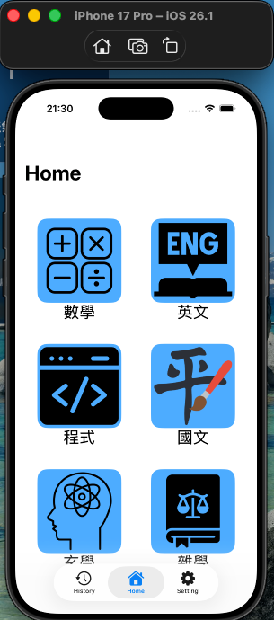
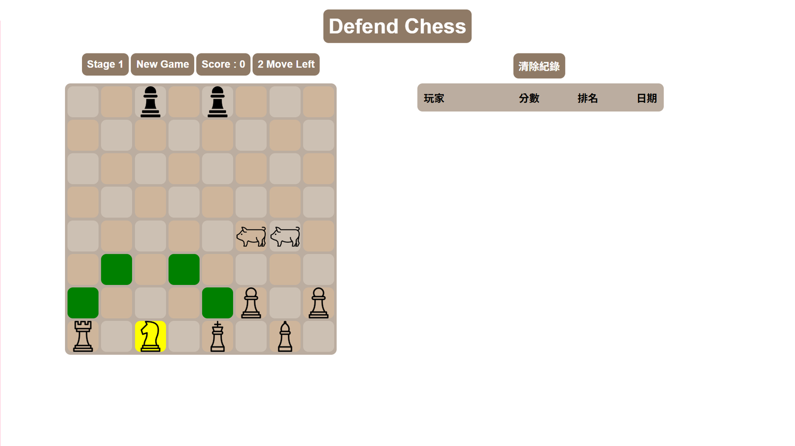
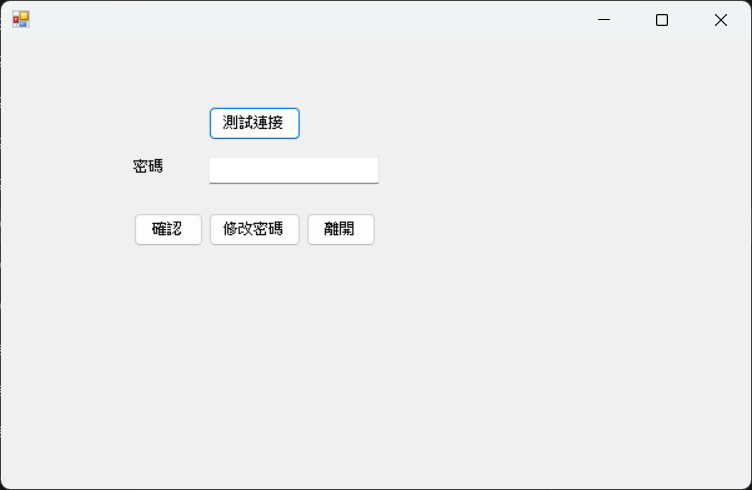

Projects
以下是從 GitHub 整理出的專案作品。點擊任一張卡片即可查看完整程式碼與 README。
AI_Subtitle 字幕工坊
Python / OpenAI Whisper / PyQt以 Whisper 進行語音解析並產生 SRT 字幕，再結合 MoviePy、ImageMagick 與 PyQt Designer 完成字幕嵌入與桌面操作介面。
GITHUB PROFILE · REPO LINK TO ADD ↗AI
SUBTITLE
SUBTITLE
My Note
Flutter / Dart / Firebase 架構All-in-one 個人管理筆記本，整合筆記、行程、記帳、訂閱與待辦事項，並規劃登入、雲端同步、附件與推播通知。
VIEW ON GITHUB ↗MY
NOTE
NOTE
iOS 題庫 App
Swift / UIKit / SQLite以 MVC 架構開發互動式題庫測驗，包含題目存取、答案判定、進度追蹤與結果計算。
VIEW ON GITHUB ↗
Defend Chess 網頁小遊戲
JavaScript / PHP / SQLite結合前端遊戲邏輯與 PHP 後端服務，實作棋子移動規則、合法路徑判斷與分數紀錄。
VIEW ON GITHUB ↗
POS 點餐系統
C# WinForms / SQLite模擬餐飲點餐流程，提供菜單選購、訂單計算、折扣處理、帳單輸出與歷史紀錄查詢。
VIEW ON GITHUB ↗